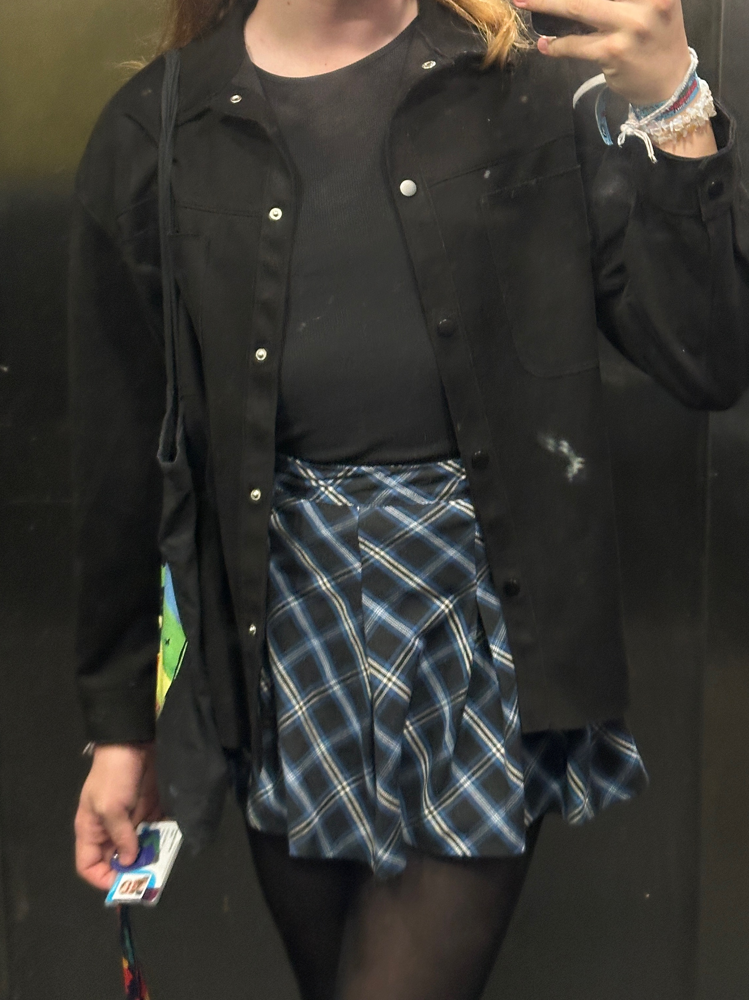

Fashion
Welcome to the fashion page, this page is dedicated to fashion tips that have helped me. However, these are
not rules for clothing, you should not be limited to a set amount of rules when dressing these are just
guidlines that I have found have worked for me.
Note: You can click images to enlarge them.

Your Body Shape
Conduct some research on female body shapes to
determine the one that aligns most with your own, and then tailor your clothing choices accordingly. If you
have a straight figure, consider emphasizing your waist. You might be pleasantly surprised by how flattering
form-fitting attire can be. Initially, it may feel a bit unfamiliar, but opting for snug-fitting garments
over loose, casual styles is the recommended approach. Whether it's dresses, skirts, pants, or tops,
choosing clothing that closely follows your body's contours is the key to a stylish look.

Colours
Embrace deeper hues and exercise caution when
considering lighter or vibrant shades. Darker colors have the ability to effectively mask the more masculine
aspects of your physique, thus aiding in the creation of a more authentic appearance. Lighter tones should
be approached with care, as they leave little room for concealment. Bold colors, while more forgiving than
light ones, have a tendency to command significant attention. However, if you have a preference for and feel
confident in vibrant colors, don't hesitate to flaunt them with pride.

Shoulders
Exercise discretion when considering strapless or
slender-strapped garments. This is because the male body typically possesses broader shoulders
compared to female bodies. If you wish to go for a
strapless design, it's advisable to keep a jacket or something similar on hand for coverage (as shown in the
picture to
the left, you can see how it accentuates the
broadness. This outfit would usually be paired with a loose jacket to cover the shoulders but not cover the
"cleavage"). Alternatively, you could opt for
another broader type of strap or a sleeved item of clothing instead of spaghetti straps, as in most cases
they are more complimentary to your appearance.

Footwear
You can easily find feminine footwear tailored to
accommodate larger feet or thicker ankles at most major shoe retailers. Trainers, pumps, boots, and sandals
are frequently offered in sizes up to 43. When it comes to high heels, it's advisable to begin with a block
heel or a lower heel for added comfort and stability. Keep in mind that wearing high heels can instantly
create the illusion of longer legs, especially if you do so with confidence. However, if high heels aren't
your thing, you can always pair a pair of black or white trainers with most outfits.
Quick Tips
1. Embrace Your Style: Find what makes you feel confident and comfortable, whether it's feminine, androgynous, or a mix of styles.
2. Focus on Fit: Well-fitting clothes can make a world of difference. Tailor or alter garments to your body shape.
3. Highlight Your Assets: Accentuate your favorite features. If you love your legs, wear skirts or dresses; if it's your shoulders, consider off-shoulder tops.
4 Layering: Layering adds depth to your outfits and can help create a more balanced silhouette.
5. Play with Accessories: Jewelry, scarves, and handbags can elevate any outfit and express your personality.
6. Experiment with Makeup: Makeup can enhance your features and boost your self-confidence. YouTube tutorials can be a great resource.
7. Choose the Right Undergarments: Well-fitted bras and shapewear can help create a more feminine silhouette.
8. Consider Colors: Lighter colors can create a softer look, while darker shades can provide definition.
9. Flattering Necklines: V-neck and scoop neck tops can be more flattering for trans women.
10. Dress for Your Body Shape: Determine your body shape (hourglass, pear, apple, etc.) and choose clothes that complement it.